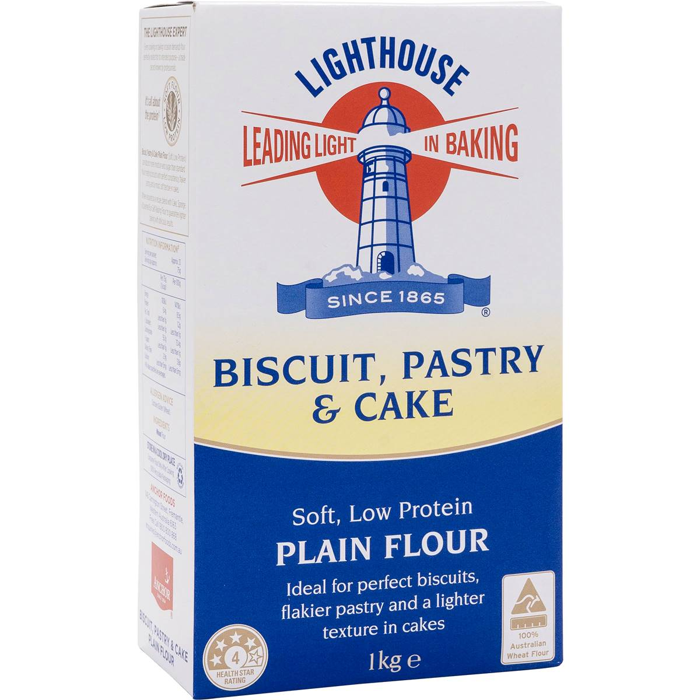
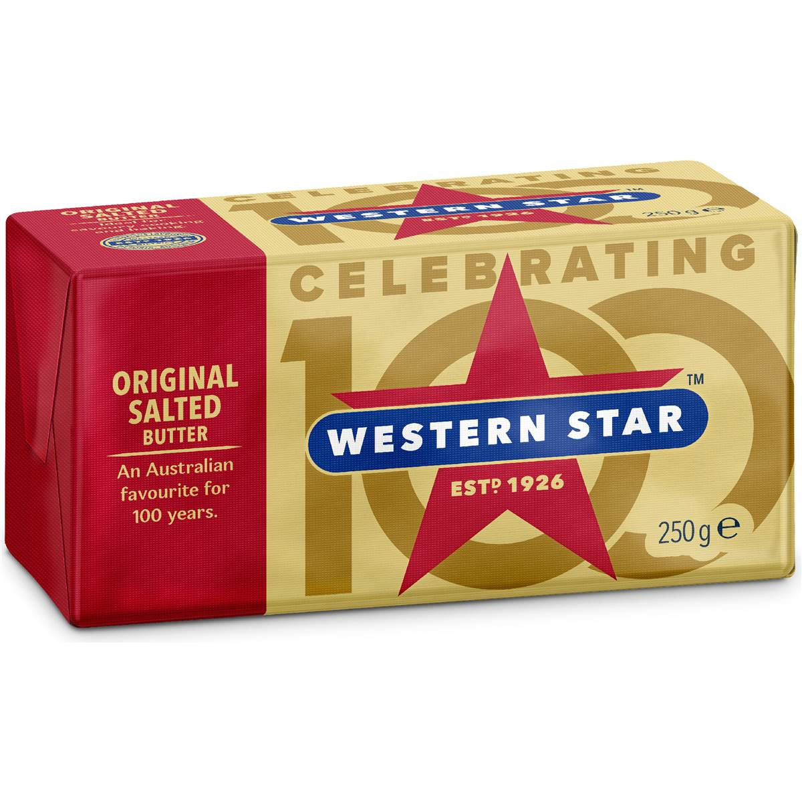

Salt Bread (Shio Pan)
Buttery, crisp-crusted Japanese milk bread rolls with a molten salted-butter centre.
Buttery, crisp-crusted Japanese milk bread rolls with a molten salted-butter centre.
 225g bread flour
225g bread flour
55g cake flour (or all-purpose) 7g instant yeast
7g instant yeast 30g sugar
30g sugar 5g salt
5g salt 150ml cold milk or water
150ml cold milk or water 30g soft unsalted butter, for the dough
30g soft unsalted butter, for the dough
6 small blocks cold salted butter, for filling Coarse sea salt, for topping
Coarse sea salt, for toppingKeep the butter blocks in the freezer until the last second. Cold butter is what leaves the hollow, steamy centre. A dark metal tray helps the bottoms crisp up.